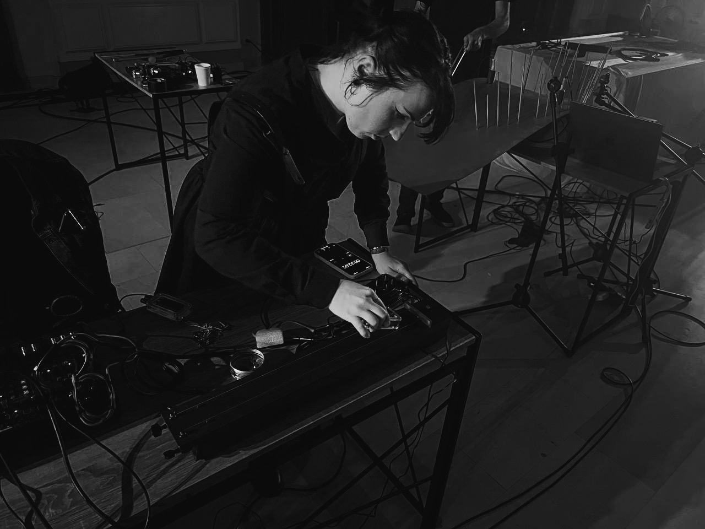
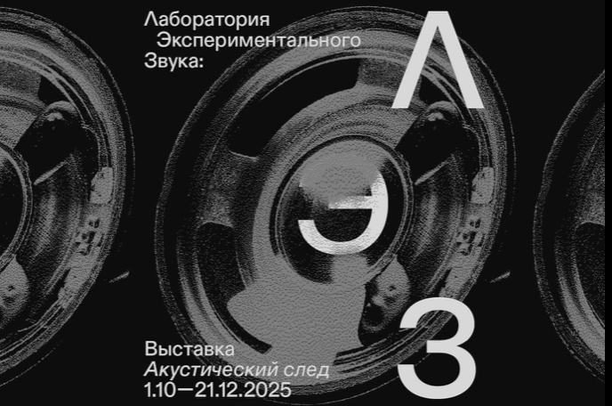

Sound artСаунд-арт
LEZ: Acoustic TraceЛЭЗ: Акустический след
Laboratory of Experimental Sound, Dom Radio. Modular synthesis, field recording, acoustic experimental composition.Лаборатория экспериментального звука, Дом радио. Модулярный синтез, полевые записи, акустическая экспериментальная композиция.

Participant in the laboratories of the Laboratory of Experimental Sound at Dom Radio: Modular Sound Synthesis, Field Recording sessions, and Acoustic Experimental Composition.
Участница лабораторий ЛЭЗ в Доме радио: модулярный синтез звука, сессии полевых записей, акустическая экспериментальная композиция.
The work made in these labs treats recording as a trace rather than a document — what remains of a room once the sound that described it has stopped.
Запись здесь — не документ, а след: то, что остаётся от помещения, когда звук, описывавший его, прекратился.
ImagesИзображения

